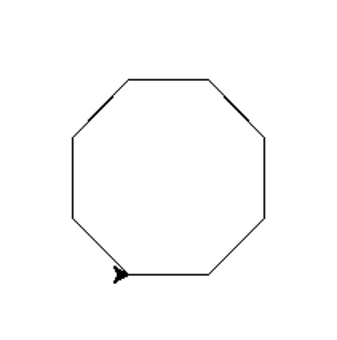
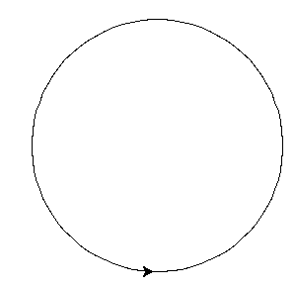
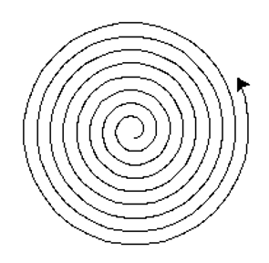
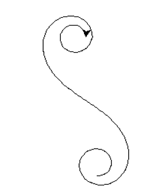

In this challenge, you must use the Python turtle to create more advanced shapes.
This octagon is an example to get you started.

For this question, create a polygon with 100 sides.

For this question, create an Archimedes spiral.

For this question, create an Euler spiral.
